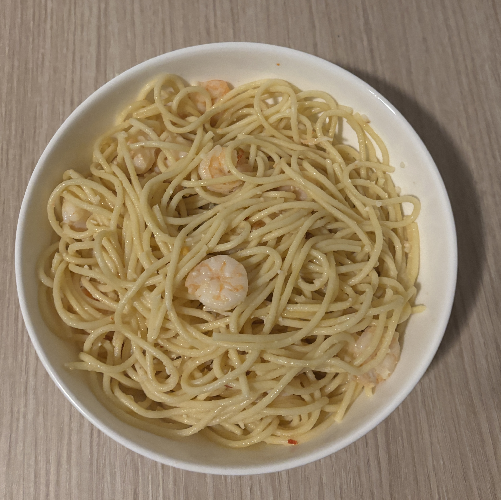

Home
Shrimp Scampi Spaghetti

Ingredients
- 4 tablespoons of minced garlic, divided
- 1 teaspoon of salt
- 3 tablespoons olive oil, divided
- 1 pound of large shrimp, peeled, deveined
- 1/4 teaspoon red pepper flakes
- 1/4 cup dry white wine
- 1 tablespoon fresh lemon juice
- 1/4 cup (1/2 stick) unsalted butter
- 1 pound spaghetti
Steps
- Whisk 2 tablespoons of garlic, salt, and 1 tablespoon of oil in a medium bowl. Add shrimp, toss to coat, and chill, uncovered, at least 30 minutes up to an hour.
- Cook spaghetti based on instructions on package.
- Heat remaining 2 tablespoons of oil in a large skillet over medium and cook shrimp mixture, being careful not to let shrimp or garlic brown, until shrimp is pink but still slightly underdone, about 1 min per side.
- Transfer shrimp to a plate with a slotted spoon leaving as much oil in the pan as possible.
- Add red pepper and remaining 2 tablespoons of garlic to skillet and cook, tossing until fragrant, about 1 minute.
- Add wine and lemon juice and cook, stirring occasionally until reduced by half, about 2 minutes.
- Add butter and cook, stirring and swirling pan occasionally, until butter is melted and sauce is thickened, about 5 minutes.
- Scrape shrimp along with any accumulated juices into skillet. Toss to coat and cook, until shrimp are fully cooked through, about 2 minutes.
- Pour shrimp and sauce over cooked spaghetti and mix then serve.